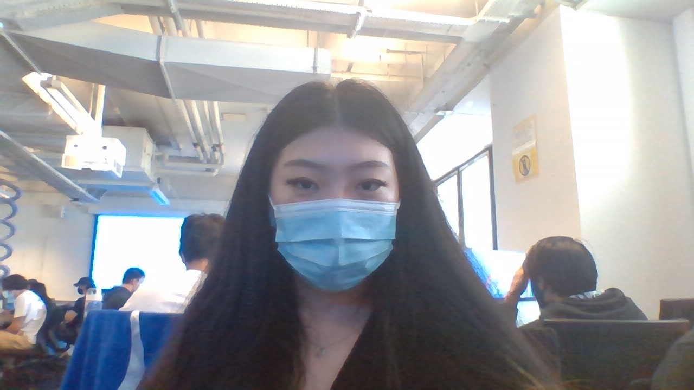
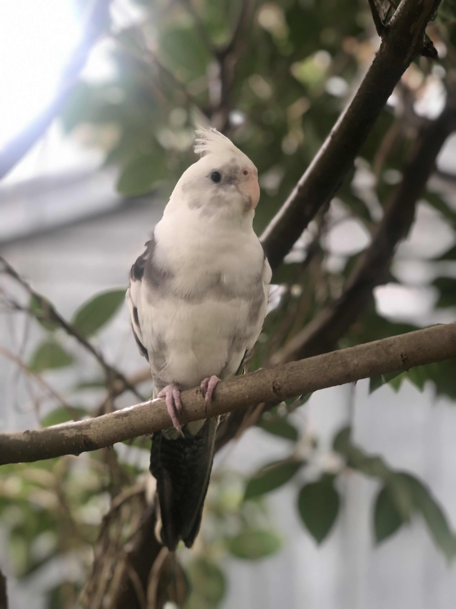
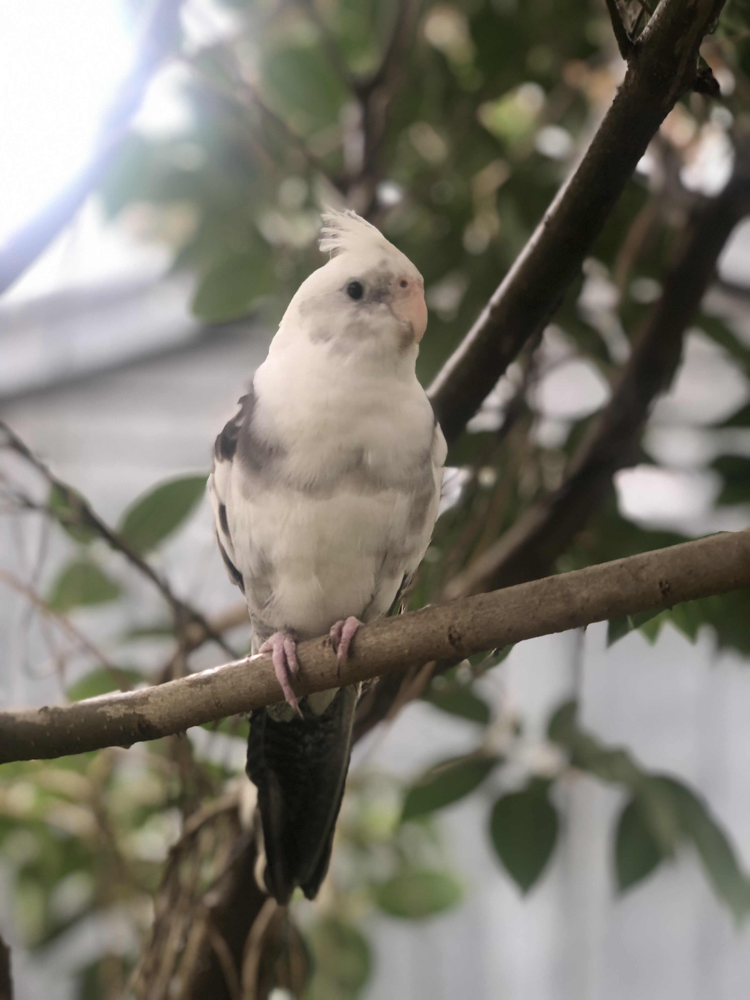
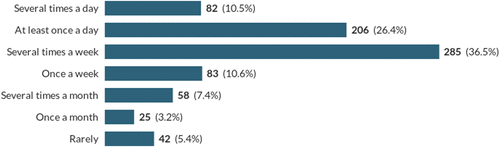
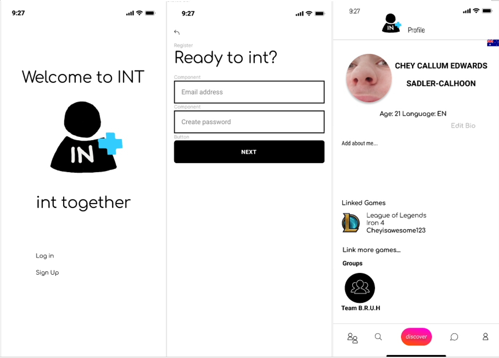
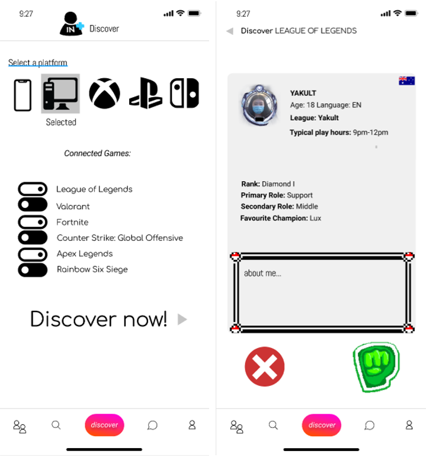
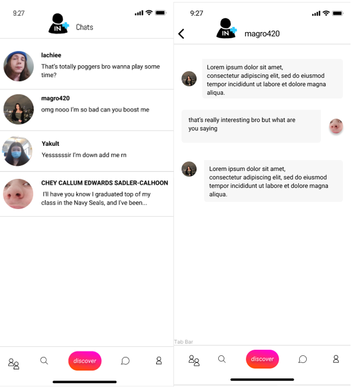
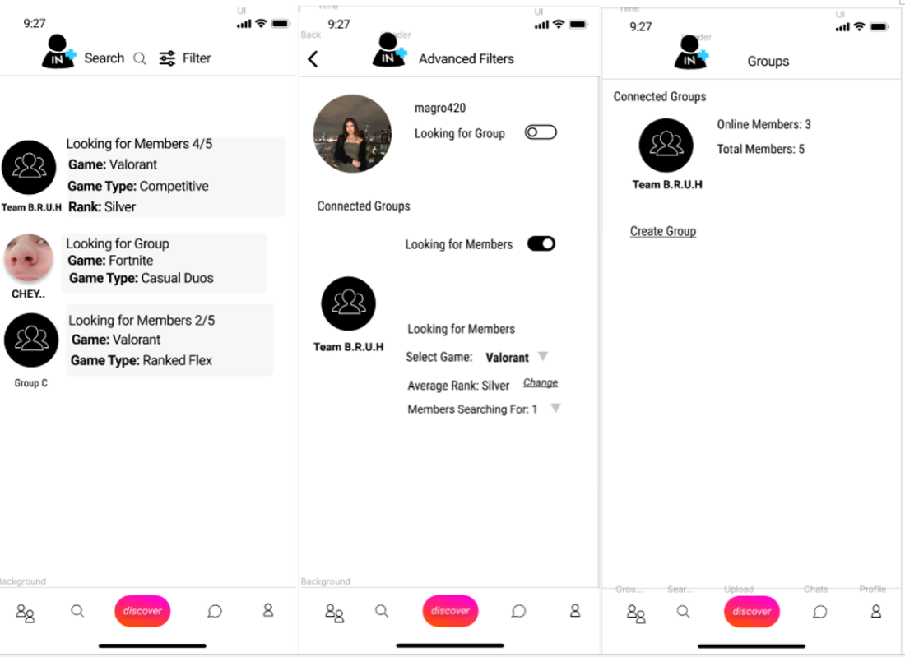
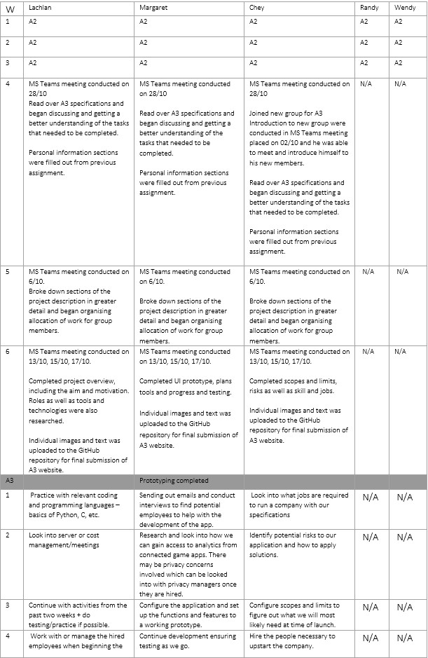
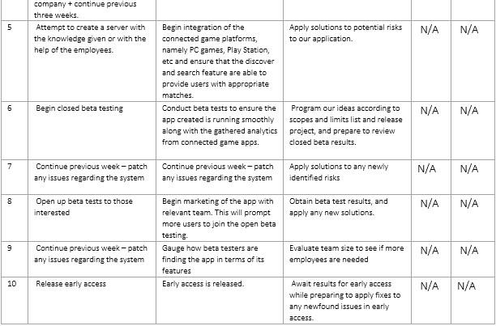

Team BRUH
Team Profiles
Hello, we are Team BRUH. There are five members in our group they are Randy (s3922276), Wendy Si (s3898700), Margaret Xiao (s3902846), Chey Sadler-Cahoon (s3923470) and Lachlan Evans (s3660610).
Randy
Introduction
My name is Randy Le and I am currently student s3922276 at RMIT University studying in my first year of a Bachelor of Information Technology. I am currently in the class Introduction to Information Technology in a group called Team Bruh. I graduated from Year 12 last year from Victoria University Secondary College and finished VCE with an ATAR of 76. I am an Australian citizen and I was born at Monash Hospital Moorabbin on the 13th of September 2002. I live in a Vietnamese household and my family is Buddhist. A hobby of mine is that I enjoy playing games especially first-person shooters such as Valorant which brought my interest to IT because I would like to understand deeper than what appears on my screen and how everything works. I currently have no experience in IT besides when I learn computing in year 11 and everything else that I have learnt during university.

Personality Profile
According to the Myers Briggs Type Indicator I am an entertainer. This means that I would be energetic and enjoy spending the moment with others. This would be helpful for my group because I am eager and willing to accept challenges and would try my hardest to complete goals which are set by my group. According to the Learning Preferences Test I am a tactile person. This means that I prefer doing the actual activity and so I am a hands-on person. This would be beneficial towards my group because it helps me connect to my teammates easier and so I am able to build stronger relationships with them making it easier for my group to work together. According to the Big 5 Factors Test I was put in the extroversion category meaning that I am energetic and eager to complete tasks. This would be beneficial for my team as we would be able to complete tasks on time as well as me being able to help others so that we are able to reach our goal as a group.
Wendy
Introduction
Hello, My name is Wendy Si and my student number is s3898700. I am from Shanghai, but was born and raised in Melbourne. My date of birth is the 8th of February 2003 and my background is Chinese. I graduated from Nossal High School in 2020 and am now a first year Bachelor of Information Technology at RMIT. I can speak English and Mandarin Chinese, and can understand Shanghainese. A fun fact about me is that I used to be a state level swimmer when I was around 10 years old. My hobbies are playing video games, reading manga, watching anime, going clubbing and going out with friends. My interest in Information Technology is mainly centred around the coding aspect, I am interested in creating programs and learning the languages. I like how Information Technology is very practical as well, with getting the opportunity to make things. This allows me to implement what I’ve learnt and be able to create projects and sharpen my skills. My experience in Information Technology is very minimal. I learnt enough HTML to build a website back in 2017 and completed an online course in Python 2 in 2018, however those skills are long forgotten as I haven’t retained my knowledge from that time.
Personality Profile
My test outcome for the 16personalities test was ISFP. ISFP people tend to have introverted, observant, feeling and prospecting personality traits. These results may influence my behaviour in a team negatively as ISFP personalities want to do things their own way and being in a team would restrict that. By taking these into account and according to 16personalities, when forming a team I should have a balance of set goals and also freedom to express myself as well as dealing with problems one-on-one or by myself.
Margaret
Introduction
Hi, I'm Margaret and I'm an Australian born Chinese. I'm bilingual, speaking both English and Chinese. I have a pet cockatiel which I adore and her name is Jett. She's named after an agent in my favourite video game at the moment, Valorant. My interests in I.T. sparked when I was struggling to find a career path I'd be happy to pursue along with my studies. I have had a passion for computer systems and gaming for a number of years now which would naturally steer me toward I.T. What makes me more interested in this field is the evolving nature of it. Especially in the face of COVID-19, we can see how workers in the technology field are needed more than ever to facilitate virtual connection in a social distancing world. I'm currently in my first year of studying for my Bachelor of I.T. Degree.
 

Personality Profile
The MBTI test indicates that I am a Campaigner (ENFP) meaning I have an outgoing, openhearted, and open-minded personality. It reveals that I am a team player and my energy towards a project will generally be a reflection on how well I enjoy working with my team. I view the people I work with as not only colleagues but also as friends. Stemming from this, I take a genuine interest in my colleagues and what they need from me to create a positive and enjoyable work environment. I am very open minded, facilitating and prefer to get roles and contributions sorted out immediately. This is where communication skills come into play as I am always optimistic and willing to help others in a group setting. The learning styles quiz reveals that I have a pragmatist style of learning. I enjoy trying out new ideas, theories and techniques to see if they work. A point to highlight with this learning style is that while they may be confident and engage initially with a project, they may lose patience with lengthy discussions and prefer to get straight to the point. Factor I, Factor III and Factor V of the Big 5 test also support my ENFP Campaigner personality, those factors being extroversion, agreeableness and imagination.
Chey
Introduction
Background: I was born in London, England, and moved to Geelong in Australia almost a year exactly after I was born and come from an Australian + Irish family. I studied at St. Joseph’s Geelong before attending MIT, during which I transferred to RMIT because I felt I could not pursue my dreams under their tutelage. I also have a black Labrador named Uzi!
Well, like most people who seem to come out of high school nowadays, my interest in IT mainly was sparked because of, unsurprisingly, video games! Of course, in time, my interest only increased as our world seems more and more digitally dependent with each passing year. I really like the ideas of using software to overcome problems, even if they’re minor. I view coding something, specifically something with a ‘goal’ in mind, to be a puzzle, and the code necessary, the steps and programming required to all be a part of the puzzle to find a solution. It’s enjoyable to me to find creative solutions to problems, and a software engineer is my way of doing that. My IT experience, however, is unfortunately quite small due to the limited teaching I had at my secondary school, but otherwise, I’ve done 5 years’ worth of IT subjects. This has led me to seek a higher education at RMIT, to reach the point I am now, having joined team ‘BRUH.’
Personality Profile
First and foremost, the results from the 16 Personalities online was Virtuso. This means to me, that judging from my results that I am quite creative, spontaneous, and know how to prioritize; all good things when it comes to assignment work, due to the ability and understanding of prioritization, and spontaneous, which in this instance, means the ability to switch mindsets to new situations with little effort, making me versatile. Of course, there are certainly a few downsides, mainly, that I am quite reserved (which I recognise as true), which makes working in a collaborative environment, particularly with new people, very hard. The second one, referring to what learning type I am, suggests that I am a Visual+Tactile hybrid. essentially meaning that I prefer reading and practical application of work over audio, something I definitely agree with as I much rather prefer working with my own hands, and at my own pace, again, something that can be good, but not in an environment that calls for teamwork. The final one was a widely popular IQ test, to which it was simply meant to be a general gauge of my intelligence, which, from my understanding, is a high average, nearly bordering ‘superior’ (as judged from the Wescler Intelligence scales). Of course, this means nothing to me, other than the factual information that, using the IQ test as a rough estimate of my intelligence, despite the almost ‘bragging’ sound to the statement, that while I may not be a genius, I am certainly not a dullard.
Lachlan
Introduction
Hey, I’m Lachlan and I’m in my final semester of my program at RMIT, looking towards mechanical engineering and branching out into an IT-based pathway. I grew up in the rural countryside of Victoria, having ventured into the city after graduating high school and going into university, at least up until the outbreak of the recent pandemic. My interest in IT is mainly from wanting to go further into my prior work with site languages such as HTML and Javascript, which was built further from my university program’s use of the C and Java languages. I want to expand my knowledge when it comes to my engineering coursework and use it as well as my ability to write, modify and maintain my coding in order to ensure everything works right, making sure to remain versatile in the fields of computer science and mechanical or mechatronic engineering and look promising to employers as I make my way out.

Personality Profile
Going by what the Myers-Briggs test tells me, I’m what’s called an INTP-A or Logician, generally one of the more introspective personality types. From a general perspective, this type is considered great for inventive and on-the-spot thinking and a strong thirst for knowledge for the things they are passionate about. For me, this is partially true since I’m often very much lost in thought a lot of the time and able to keep throwing ideas on the wall and seeing what sticks. Generally, I often work best when there’s a group to keep my focus there, though sometimes I do end up being the motivator if I feel it’s best to keep going, according to the group role test by 123Test I took which resulted in me being called the expert, followed by the driver. The learning style test gave me somewhat of a balanced output, though it did gravitate towards the visual learner.
Group Processes

With the addition of another person, we can work more cohesively as Chey is a very proactive person. We have been dealing with some substantial inactivity from some of the other group members, so it’s much easier to get some kind of interaction between members now, with his eagerness to enter calls and be very much on time with what was previously planned. With this change in mind, we can get conversation going and begin asking questions on what the team’s next steps are for the next project, allowing for more important points to be made such as what the purpose of the project is, as well as any further features it could feature. While inactivity and lack of energy is something that is often observed pretty heavily in early university life, it usually reduces as the people who remain are those with the resolve to continue over four or five years.
As for any changes in group processes, with the increase in activity, more calls have been made to discuss delegations for who does what and more fleshing out of the project’s components. While the bulk of the project already written or at least delegated in the week towards the deadline, there was still quite some more work to do along the way with what was essentially three active members. Calls were made in case questions were asked or just to ensure everyone remaining was still on the same page, as well as messaging for any further discussion.
Tools
Team B.R.U.H were allocated our groups on Canvas, a Microsoft Teams was created for our team as well as a GitHub Repository. With that, a group website was created and group members were able to add their report information and media to the repository. Our group work allocation was done primarily through MS Teams and all meetings were conducted here. A Google Doc was also created for us to collaborate and write our individual contributions.
You can view our GitHub Repository here.
Meetings:
1. 29/09/21 Agenda Recordings Actions
2. 02/10/21 Agenda Recordings Actions3. 15/09/21 Agenda Recordings Actions
4. 13/09/21 Agenda Recordings Actions
5. 16/09/21 Agenda Recordings Actions
6. 17/10/21 Agenda Recordings Actions
Career Plans
Each career plan and ideal job bares some similarity outside of one. Lachlan’s server engineer role focuses more on maintaining a server’s infrastructure and providing analyses on any troubleshooting on it or the cloud as well as ensuring quick downtime responses, whereas Chey’s follows a very similar role and includes sections such as service desk work and cost analysis as well as team management in information and communications technology. Margaret’s role as a user experience designer is largely different from the other two, instead focusing on the interaction between customers or users and programs, a job that is much desired in this project and its very strong need to be as user-friendly as possible.
There are important points of contrast to make on the ideal jobs selected. UX Design particularly steers toward a more creative direction when compared to the other roles. To highlight this difference, the requirement to understand multiple coding languages is not required for UX Designers as much as it would be for Cyber Security Analysts and Systems Engineers. This is the case as these roles are much more technical than UX. UX Designers focus more on creating frameworks, being able to identify what users like and conducting user testing to assist clients create a more engaging experience for users on their applications. The same can be said for I.T. Service Desk Officers. They won't be required to know coding languages to the same degree as engineers and analysts. A complex understanding of computer functionality as well as a degree of empathy and customer service is the skill set required for this ideal job.
Project Description
The idea is known as Project INT and is proposed to help people looking for a group or party to play particular games or other online activities based on their need, by searching for a game, list of games or other certain criteria in which the application attempts to find active or looking suitable parties to team up with. On the other hand, people in groups can make listings for what and how many players are required. Broadly speaking, the system is intended to assist players who need to find groups, be it from a very highly intensive game with a large player base such as League of Legends, a party game that needs a small number of people together like the Jackbox series, or other smaller multiplayer games with a very niche interest, it will be a better experience for those willing to find others who share some of the same interests. Think of it like advertising for a LAN party event but entirely online, allowing communication between team members before a game starts with the more modern social distancing.
Players could potentially have INT actively searching for a party in the background while they do other tasks, and if there is one that is applicable to their capabilities or what they need, they are notified by the application and prompted to join them. This will help players who have had difficulty in finding a party to work with and help with, maybe for a quick game or two, or to find a new community that has some experience with the games that they play. It could be used to popularize the lesser-known games or acclimate people to something that they want to give a quick look at with some people who already own it before they try it out with a friend group.
Adobe Photoshop proficiency was ranked 25 with 645 job postings and will be most likely required for positions such as UX Design, as they are often creating prototypes and wireframes.The motivation for this project mostly revolves around how ineffective it can feel when trying to find or rally groups to play a certain game with – say you want to play a heavily team-oriented game such as Destiny, Left 4 Dead or Payday 2, but you cannot because too many times you’ve just had bad coordination with the peers you’ve been randomly assigned to. You can’t ask the friends you normally play these certain types of games with because maybe they’ve been too busy playing another game or doing other things in their time. Maybe it’s just out of season for your friend group, but you’re still needing some kind of team while you play on the off time. Given the recent technology advances and IT flourishes with the gaming community in recent times such as the use of Discord as a main interface or even their general form of social interaction.
In the past, IRC and forums were used to coordinate groups of people sharing the same interests, though these were mostly depreciated in favour of the more modern communication interfaces of the early 2010s such as Skype and Teamspeak, before eventually reaching the more modernized applications such as Discord which dominates the current environment for people to communicate with others regarding gaming or other such topics. What differentiates INT from these other platforms is that oftentimes the focus of a community that is centred on a game, for example a large Destiny-based Discord group, is on the features and discussion on the game itself such as patch notes as opposed to people actively looking for a group to participate with, whereas users on INT could search for active Destiny parties just needing a few extra members to start a raid, or even enter into some exploration into some calmer, more niche games.
Aims
When developing a platform that helps players find others and vice versa, it’s important to know how to flesh out this goal in mind as well as any obstacles that stand in its way, as well as knowing if there’s any other potential goals on the side that can be completed in the process that will benefit the project and the team behind it. The most important aim is the following:
1. To provide a platform for players needing teams, as well as teams needing players.
In the earlier eras of gaming, it was more difficult to find like-minded online groups that could comfortably sit down and play something together. Even today with the rise of more modern and gaming-friendly platforms like Discord and Reddit, these still suffer from a reasonable difficulty in finding willing players (like the former) or showcasing active listings (like the latter). As such, there needs to be some kind of platform that can do these things simultaneously.
2. Maximize entertainment when playing something
A lot of the time when you’re playing solo queue in a team-based game, you’re basically gambling. You don’t know who you’re going to join with before you enter it, so chances are you’ll have a really good team, or one that makes you question why you bothered to even open up the game in the first place. Why bother with the risk of solo queue when you can pre-emptively get a team organised before you hit the start button? This can extend to less competitive games, where the benefits of playing alone are easily outweighed by playing with teammates like on games such as Left 4 Dead or Fall Guys or maybe you can use it to host a tournament on your favourite fighting game – the sky’s the limit.
3. To help provide a spotlight to more niche games
A player could choose to sort listings by how little they are played, which can help lesser-known games get the attention they need. After all, Among Us had very modest gameplay up until the middle of 2020, where it achieved some the notice of some streamers and eventually blew up immensely. While it is still unlikely to have lightning strike twice with such a dramatic rise in plays, the potential to allow a showcase on a forgotten multiplayer game with such a niche that one would often be forced to play alone is very great.
Plans and Progress
The beginning of project INT:
Project INT is a mobile application that can be used in hand with various video games to allow for an easier experience to find players or parties to team up with. The project came into inception with the direct effects of the COVID-19 pandemic on the wellbeing of individuals globally. Since the beginning of it all, it has impacted virtually every aspect of our everyday lives, notably the lockdowns and the restrictions it imposes on how we are able to work, socialise, study and perform recreational activities. As gaming was a way for people to interact, we believe there is grounds to create a new social media app aimed at building communities by social interaction through online recreational activities. Hence, the idea of Project INT was concepted to allow for said interactions to be made for users. A 2021 article and study conducted by Matthew Barr from the University of Glasgow, 'Playing Video Games During the COVID-19 Pandemic and Effects on Players’ Well-Being' looks into this with the response of 781 participants. Results show that across the board, given the lockdowns there has been a staggering increase in gameplay habits amongst participants as shown by figure 1 and 2.
figure 1:Pre-outbreak gameplay habits
figure 2:Post-outbreak gameplay habits
The study also gauges the more specific reasons why, most notably to 'faux-socialise' or 'to play more multiplayer games to make up for the lack of in person communication'.
This is highlighted in a similar way in the 2021 article published by T. Bengtsson, L. Bom and L. Fynbo from The Danish Centre for Social Science Research, Copenhagen 'Playing Apart Together: Young People’s Online Gaming During the COVID-19 Lockdown'. The study conducted by a series of interviews of participants highlight that online gaming provided an opportunity for people to create communities beyond locality. For younger individuals and those still in secondary or higher education studies, gaming can be a third 'home' next to school and their family. It allows individuals to be part of something bigger and create a sense of belonging and solidarity within a community. The study also finds that during the COVID-19 pandemic, online video gaming also allowed for the extension of friend groups. People that you'd normally not get to interact with in your day-to-day life is made possible through this which creates healthy discourse and has a positive effect on the social life of individuals all around the world.
There is evidence conducted by not only studies but what we see in our day to day lives. It is obvious that everyone's digital footprint has increased as well as watch time on various streaming platforms such as YouTube, Twitch, etc. Team B.R.U.H's personal experience aligns with this as gaming has been an outlet for all of our wellbeing's during the COVID-19 pandemic to socialise and interact. This has prompted us to explore and create an app for this market.
Project INT is currently in the works to become a mobile app to make new gamer friends and build communities. As highlighted before, this app aims is to ultimately allow people to find people to play games with that either do not have a solid group to begin with or those looking to extend the groups that they already have. This should be done based on game type and skill levels through analytics by linking your profile to games that users play.
Current Progress:
At the moment, Team B.R.U.H has currently outlined the framework and UI for the mobile app using Figma. As a team we've discussed many of the features we'd like to implement and have included them in the UI prototype.
There are main two features that we are currently working on that will work in combination with each other to instigate initial contact between users. This will be either flagging themselves as looking for group or looking for members.
Users will be able to flag themselves as either looking for a group or a group looking for members. Project INT will have multiple features to cater its search functions to what you need. For competitive games like Valorant, CSGO or League of Legends etc, you will be able to link your accounts which will import your statistics and analyse your gameplay to provide you with search results of gamers to provide the best fit for you. The same can be said for or role-playing games such as World of Warcraft or New World where search criteria might not be skill based but more dependent on how much you have grinded or what bosses or dungeons you are up to in the game. There will also be options for casual games such as Among Us, Phasmophobia, Jack Box, etc for people genuinely interested in playing these games but don't want to play with complete strangers and would like to get to know individuals or integrate into a group who is already playing.
Login and Profile UI:
Popularised from the popular dating app, Tinder, we've also looked into creating a feature similar to its swipe left or right feature. Obviously, this has been put in place to connect with potential matches for gaming partners rather than love interests. In the ‘Discover tab’, you’ll be able to either connect or ignore the profiles that are brought up based on your search criteria. If you and another player match, it will prompt a conversation to start.
Discover Feature:
Chat Feature:
New users of the app will be prompted to provide their details as to what they are looking to find as well as link their game accounts to their profile. It will include basic information like name, age, region, most popular games. For people looking for friends, they can toggle on Looking for Group. In this section they can select which game they are looking for friends or a group for and based on the analytics of their profile from the linked game account, the search system will provide them with a number of groups actively searching for a member or multiple members. Of course, this varies from game to game based on what it is. For the aforementioned competitive games, based on rank you may be only able to duo queue while in other ranks you are able to have multiple members. In games such as Left 4 Dead 2 or Fortnite there will be player caps of 4. All of these restrictions will be taken into account when programming this search feature.
Search Feature:
For the future
Team B.R.U.H. is currently looking into expanding its work development team. Roles such as a team of software engineers, marketing manager and team as well as privacy managers. We currently have the planned UI and framework ready to create, we just need a team of engineers to develop the fully functioning prototype to be able to perform beta testing on servers in 5 weeks' time. Once the product is ready to release on the app store, we’ll also need a marketing director and a subsequent team to get the word out there and advertise its existence to gain more traction and users. Finally, we are handling private information from users, so it important to have a privacy and cybersecurity team so that our servers are secure and private information will not be leaked. Before the release date we’d like to assemble a group of beta testers so that we can look for any bugs or UI issues that users experience with project INT as well as gauge what could be added or improved.
Roles
When attempting to put together a project for the beginning of the project, it is important to know what roles are needed to build it. At this early of a stage in the program’s lifetime, the business side of the program has not jumpstarted yet, so roles such as analysts and business developers have not been planned at this point, instead focusing on the roles that directly create the UI and handle any of the community-based issues that may be presented to the team.
Developers
The developers of the project are responsible for ensuring the code of the system is robust to avoid client-side issues such as crashing, soft-locking or other frustrating bugs that impede the use of the application. The system is mainly hierarchical, where the lead developers outsource down some of their ideas down onto the others while they work on key components that affect the infrastructure heavily or ensure its connections with the server are working fine.
Another side that a developer can do is make plans what the next feature is, what its purpose is and how it can benefit the application more.
Designers
The designers are used to make the application and webpage look appealing enough to keep its users interested, and to make sure that any of the listings, search bars, links, and other forms of interfacing. Specialized versions such as UX designers will help with how these interact with any of the users and to ensure it isn’t overly cluttered or an eyesore.
Moderation/Administration
While there is going to be more focus for community moderation, these roles are mainly to help resolve any issues that may prevent standard use of the application such as consistent trolls that wriggle out of or abuse the report system and to fix any unintentional problems caused from mishaps in the community.
Beta testing
Less of a job-based role and more of an encouragement for members within the community or some other freelance developers to test out certain components and new features within the application to ensure it is working correctly without any issues or bugs. This is to ensure that when the feature leaves its alpha stage or early access it does not cause problems with updates that annoy everyone. Furthermore, it allows the developers to know if a certain change is considered acceptable by the community, and whether or not to make the decision to make large modifications to the application.
Scope and Limits
Objectives that need to be achieved for our project, at the very least, for it to be released is that...
1. Users need to be able to create profiles.
2. Users need to be able to find profiles of others.
3. Users need to be able to access a ‘settings’ page, and there needs to be a ‘contact us’ section on that page.
4. Users also need to be able to report other profiles.
These basic functions are the ‘base’ of our project. Without getting these complete necessities done and dusted, our project would not be able to function or succeed. While this won’t be the complete end product, as we will constantly try to improve our system and make it the best that it possibly can be, it should be important to note that, as with most programs, it most likely won’t start off with the ‘highest of quality’ that one should expect roughly two years after the program is made. It’s important to gauge whether the system works before trying to overhaul it to better suit the needs if it doesn’t. It’d be certainly a lot worse if we overdevelop the project, and find out later that people would prefer simplicity over having to go through dozens of organized options to find the ‘search’ key. Realistically, the most ideal method is to produce a simple system that one can easily grasp the idea of, allowing surveys to go out frequently so we can get feedback on how best to improve our project straight from the audience who we cater it towards.
Ideally, in the future, there should be certain advancements to our project made that allow us to keep a simplicity so as to not confuse the consumers, but also to provide necessary functions. Notice above when I gave a list, for example, a simple ideal ‘improvement’ but not a necessity would be to sort hobbies by tags, allowing for an easy way to search for a group catering to your hobbies. It should, however, be optional; sometimes people would prefer to find new groups of people to play with, perhaps even learn about a new potential hobby to participate in to expand their horizons. While the ability to search for specific hobbies would be great, it’s not something that’s immediately required right off the bat. Additionally, an example of a potential improvement but not a necessity would be the ability to find, and ‘join’ groups. Right now, the basic idea is that it functions similar to ‘Tinder,’ in that you find apps, but an additional feature that can be added would be the ability to have numerous members join a ‘group’ similar to that of Facebooks groups. This could include features such as an automatic group chat between each member, perhaps the ability to add each other as ‘friends’ so that they can message each other privately.
The ‘Report’ function listed above, while not a ‘functional requirement’ for our application, it is still an important feature nevertheless. Rather than the others which allow the program to complete its function, the report function is there to specifically report an issue, typically with an individual or their group to the staff of our company, which helps to prevent issues as a result.
Tools and Techologies
The technologies needed for an iOS version of this interface would include a Mac computer to allow connecting the code to the app and build and provide tests, with a large amount of external storage to allow for a reasonably sized server if it were to be hosted and maintained by us. While experimenting with the build it is recommended to view it from a variety of displays are to be in order to detect any discrepancies and bugs during its early stage.
Testing
Team B.R.U.H's software will be assessed by conducting user testing with its target demographic, those who are wanting to be more social or who play video games. The main focus of this testing will be to gauge whether the app works and there are no bugs or unexpected errors when navigating through the software, and to establish if the application meets the experience needs of its users.
User testing will be conducted in multiple stages throughout the development of the app. As social media will be the main premise of the app, we'll need to conduct user testing on a variety of people within the target demographic. We are aiming to receive 8 individual user tests per stage of development. The prototype of the app in its early stages will be presented to these users to determine if the flow of the program is fluid and if they have any feedback regarding the layout of the features.
All forms of beta or alpha user testing will be able to be conducted virtually, given its digital nature. There will also be a population of potential users given the prominence of social media and video games. In this way, testing can be cheap as most people have access to their own desktops and mobile phones and it will allow for social distancing.
Timeframe

Risks
There are several risks that can be identified even before the actual development of the project itself, many of them being the same issue that affects many social media sides, such as bots, viruses affecting the systems, fake profiles or ‘catfishing’ to an extent, or hacking. The reason why I listed hacking and viruses as two different things, is that while viruses may try to destroy the computers system entirely, hackers may simply try to bypass any protection the project has, and may obtain personal data, such as names, phone numbers, addresses, so forth.
First of all, to prevent accounts that would go against our project's guidelines and rules, the app will provide a ‘report’ function as part of the profiles. This allows for any user that finds a profile that’s considered harmful to be submitted under review, at which point a staff member would review the account. Typically, to avoid trolls or otherwise, an account will require multiple reports. The report function is simply the best method when it comes to this method, as customers will frequently be able to spot accounts that managed to bypass the automatic detection system that will be put in place.
Speaking of automatic detection system, like many websites that require an account verification, our program would ideally be using ‘ReCAPTCHA’ during the process to weed out bots. While it doesn’t necessarily prevent it entirely, it does make it harder for accounts to be automatically created for the purpose of making fake accounts. By doing this, we prevent a lot of misinformation, scams, and other malicious activity from individuals seeking to exploit the trustfulness of others, who make their profit by trying to entice other users with false promises. While this isn’t a ‘complete’ solution, as individuals who intend to do this to others can simply make a seemingly normal account, this does prevent them from mass-producing accounts for their own purposes. This is the most that social media companies can do to prevent ‘botting,’ and for the foreseeable future, it will have to do, until a complete foolproof solution is found.
For the third major threat that often happens to many large companies, is Denial of Service attacks, commonly abbreviated to ‘DoS attacks.’ This is done by typically flooding the website with a large number of users (typically bots) to overload its servers, or sending them IP packets that extend the maximum length allowed which can crash many operating systems. While DoS attacks can be certainly hard to predict, as there can be a lot of factors that can cause it, there are some typical, standard measures used. For example, using an Intrusion Prevention System (IPS) is typically meant for such a purpose, because, as its name suggests, it is meant to monitor the system to prevent intrusion of malicious software or unauthorized users. In addition to that, we will manually configure our firewalls and routers to disallow malformed traffic, which the combination of the two will be able to prevent a lot of the more ‘basic’ attacks. Of course, there are other such examples of defenses we can take, such as testing and applying security patches frequently, minimizing IP spoofing, or blocking all ICMP traffic connecting to the network.
Group Processes
Communication breakdowns and sessions where a member has become inactive are not uncommon circumstances and this team has been no stranger to such a scenario. In order to maintain the momentum with those who remain fixated with the activities, calls are to be made on a somewhat regular basis with the main promise that any new breakthrough with understanding is to be explained to the group as a whole through Microsoft Teams or Outlook so nobody misses out on any progress made throughout. With the situation that has been ongoing with this team, it is best to ensure that the remaining members keep tabs on these programs to ensure they are not left behind by checking it once a day in case anyone leaves something or beginning a call once every up to four days with additional ones as the deadline closes.
Skills and Jobs
Four jobs that would need to be hired beyond a shadow of a doubt, would be an Analyst, Software Engineer, Privacy Manager, and Senior Product Marketing Manager.
Analysts are one of the more important roles above. Analysts, as with most jobs here, should ideally have some experience in the field (although not completely compulsory, just ideally), and most importantly should have excellent communication skills, with the ability to translate complicated findings or technical approaches in an easy to comprehend manners. They should be able to communicate with others clearly the data they’ve collected, and the results. While they don’t need to constantly work in a ‘team-environment’ with other workers that have different jobs, they definitely should at some capacity be able to work with other Analysts. Leadership isn’t relevant towards this specific position, unless there are more than 2 data analysts, at which point it can certainly be assumed a leader would be necessary, as there will definitely need to be more guidance on what to do other than ‘you do that half, I do this half,’ but no specific management techniques would be specifically required of it. The ability to think in an innovative manner would be great, but only for the purpose of making own job easier, as I’m sure that if they found an innovative way to do double the effort through half the time with one specific method, I’m certain we’ll allow it and encourage those methods of thinking.
Another job requirement would be a Software Engineer. Like Analysts, they should ideally have some experience in the field. However, team communication skills are a must; while they can work by themselves, if we were to have multiple Software Engineers, communication, delegation of tasks, and overall innovative thinking regarding the software that they developing, is an important process in order to prevent wasted time due to someone doing a task that’s already being done by someone else, or someone simply not sure what they’re doing. Obviously, they should have at least some technical expertise when it comes to programming in order to best succeed at their objectives. This is certainly one of the most important jobs that we would require, as its capability quite literally determines how well the project itself functions, and as such their work is very critical to our project's success.
Next would be Privacy Manager and Senior Product Marketing Manager. Rather than directly affecting how it functions like the other two, as Analysts provide input to our Software Engineers to change them based on Customers wants and needs, Privacy Manager and Senior Product Marketing Manager, are both roles that can affect how well our product does.
Privacy Manager, for instance, functions as both a legal representative, as well as someone who functions as a Customer Support who helps our consumers with keeping privacy. They don’t have a direct effect on the product, but rather the community, so therefore, the only skills, technical or otherwise that would be required of them, would simply be knowledge of our product, standard legal practices, as well as how to work and communicate with others over the phone (as I doubt many people will come into our workplace in person specifically to get customer support). Team work experience may be required solely for helping others in their same occupation when it comes to their own problems, but otherwise, they should be able to solve their own problems. Innovative thinking, as always, is encouraged, but specifically when it comes to legal practices and customer support, it can hardly be classified as necessary, at best trying to come up with new clauses in the terms and conditions, but that itself should be classified as ‘innovative thinking.’
Finally, Product Marketing Manager. Their purpose, as their name implies, is to market our product. Skills and technical knowledge of these people doesn’t need to be too much when it comes to the software itself, as only skills on marketing and commerce is immediately relevant to these people. Leadership and management techniques need to be fairly advanced, and experience in the field would be a huge addition, Obviously, this is a rather important position as well, as it can quite literally determine how well our product succeeds overall, as even if we have spectacular people in the other roles, it doesn’t matter in the slightest if we don’t have any money to actually pay them with, or even money to upkeep our own services.
While there are certainly other roles that could arguably be more useful, I listed the above specifically because I believe it is important to have an important list of both functional and non-functional requirements of our product, specifically to show that there is more to our project then just simply code something and have some people manage it. It is important to have jobs for every possible conceivable part that would be needed for the project, not just one that serves to make sure that the product is functional, but other professions that will allow the project to succeed.
Reflection
Team B.R.U.H's Reflection
Overall, the remaining active members of Team BRUH worked effectively as a team to complete assignment 3. There were no complaints of contributions and our personalities and interests allowed us to work effectively as a team leading up to the submission date. As a Team, Team BRUH can all agree that our combined efforts towards the ultimate submission of the assignment were timely and effective.
Team BRUH was originally a team of 5 members but weeks before the assignment was due, 2 members had made no contact to let us know that they would not be present for the remainder of the time left to complete it. Though this was out of our control, it did mean that remaining members had to split the remaining tasks among the remaining members. What could be improved from team BRUH is communication in this regard to allow for ample time to work around these complications or even offer assistance to those who were unable to complete their designated tasks.
As a collective, Team BRUH can all agree that with the remaining team members it was surprising is that we were all on board and ready to complete the assignment despite these new challenges. We’ve all learnt that we need to be ready and have a plan for the worst-case scenarios as we did. We’ve learnt that motivation is a key factor to successful group work. For the remaining members we were able to stay motivated to complete the task.
Individual Reflections
Chey
What went well - Surprisingly how well orchestrated everything was towards the end of the project, as even though we had 2 less members than we had initially planned for, the overall cooperation between this team was I personally think leaps and bounds better than my previous assignment.
What could be improved – Certainly outside of my own individual capabilities but most definitely the organization of our team. We had two members completely go MIA in accordance with our assignment, and while they potentially may have good reasons for it, they should’ve given us a warning in advance regarding it.
At least one thing that was surprising – The most thing that was surprising was genuinely the fact that two members completely disappeared from the face of the earth. I’d argue that in itself was the most challenging part of finishing Assignment 3, because by doing so we faced a lot of challenges when it came to actual organization, as we weren’t sure what exactly we needed to do in order to sort the issue, whether it be wait for the teammates, or maybe try to go ahead and work without the help of our teammates.
At least one thing that you have learned about groups - One thing that I have learnt about groups is they certainly, depending on who you are paired with, can be a major factor into how well your assignment succeeds overall, and that, in some cases, despites the challenges you face it is potential to overcome it.
I do think that the TOOLS section and the GitHub logs of activity reflects our group work on the assignment, as I personally believe that I did very well in comparison to my previous assignment.
Lachlan
The good elements that went well was the cohesiveness with those remaining in the group while we did our tasks. We stuck onto the target whenever we had a call and finished surprisingly earlier than expected as a result. The cooperation was good and there were no complaints about unwanted delegations – we just did the parts we were directed to do even though we have two missing members in our line-up.
The negative factors I wish that could have been better were obviously the missing members. If not for the one additional member, we likely would not have had the push to ensure this project went as well as expected due to the lack of communication beforehand that damaged motivation and our ability to move onward from the previous assignment that was quite lukewarm in reception as a result of the slow mobilisation. This is why websites such as Sparkplus exist, anyway.
I haven’t had this much experience with slow groups, but if there was one thing I learned from this situation, it’s that it can occur at anytime and I need to be prepared to keep trying to motivate everyone as a result or potentially fall behind while everyone remains inactive.
We waited until our work on the document version was satisfactory enough in our eyes before we ported it over to GitHub, hence the small amount of commits but moderately large difference from the previous assignment’s webpage.
Margaret
Overall, the remaining members of Team BRUH worked very well toward the end of the assignment. We stuck to meeting times and were able to get the report side of our project as well as the website done well before the submission time. There were no complaints about allocation, in fact, where I was struggling with my workload Chey and Lachlan were able to help me out when they were done with their tasks without me even asking. It was refreshing to have proactive team members even though there were inactive members.
The negative factor that was a direct result of inactive members was the sudden increased workload. Though these were addressed later on with remaining members actively taking up work where they could, it wasn’t very ideal that a 5-person job now had to be split between 3 members. In this case, given the changing circumstance we could have organised our time better.
One thing that was surprising was that though we technically gained a member, we ended up having less members that worked on the assignment.
One thing that I’ve learnt about groups, especially given the virtual learning environment that we’ve had to work in, communication is key. The members that you work with will definitely have an impact on the result of the task. You can always ask members for help. Or in my case, members will help when you need it without even asking.
The tools section and the GitHub logs of activity reflects the group work on the assignment well.